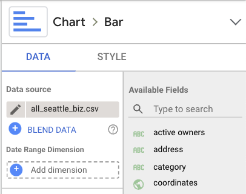

Data Analytics with Google Data Studio Tutorial
This tutorial will walk through how to use Data Studio to present key insights for businesses and how to easily customize the report based on different data.
The data for Seattle businesses , Vancouver businesses and Singapore businesses other categories and restaurant category are in the drive.
Here are the Data Analytics report for Seattle , Vancouver , and Singapore .
Table of Contents
Introduction
The purpose of this data analytics pipeline with Google Data Studio is to be able to generate insights from any big JSON file for the sales team. The current JSON files that we have consist of information about businesses in Seattle, Vancouver, and Singapore. This information includes names of businesses, latitude, longitude, website, ratings, reviews, attributes, and more.
Implementation
This data analytics pipeline include two steps:
Step 1. Preprocess JSON file
Firstly, we have to preprocess the JSON file and generate csv files. You can download the JSON files from the Google Drive. Then, we use the generate_csv_files.py script in the data-studio-analytics folder of NearMe repo. To run the script, please follow the steps below.
$ chmod +x generate_csv_files.py
$ ./generate_csv_files.py [path to input file] [path to output file for map and attributes] [path to output file for time series]
This script will generate two csv files: 1) one csv file that consists of information for data studio map and attributes graph 2) one csv file specifically for time series graph. The CSV files are divided into two files due to file size limit of 100 MB on Data Studio.
Step 2. Upload the CSV files to the Google Data Studio
Once we have the CSV files, we can go to the Data Studio report. There, we should change the data source by clickling the graph and hover to the right upper corner of the report. You will see a data source of the graph (shown below). Change the data source to your newly generated CSV files. You should do so for all the graphs on the report.
{kind=link}
Note
You should only use the time series csv file on the two time series graphs and use the other csv file for all the other filters and graphs.
Note
If the map does not show the businesses properly, make sure to check the field type for coordinates field. The format has to be geo/latitude, longitude